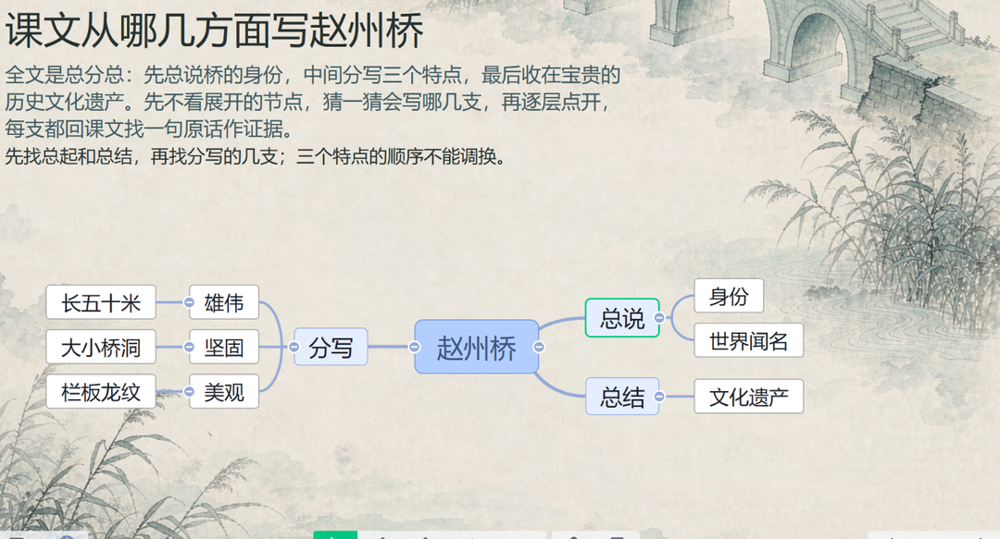
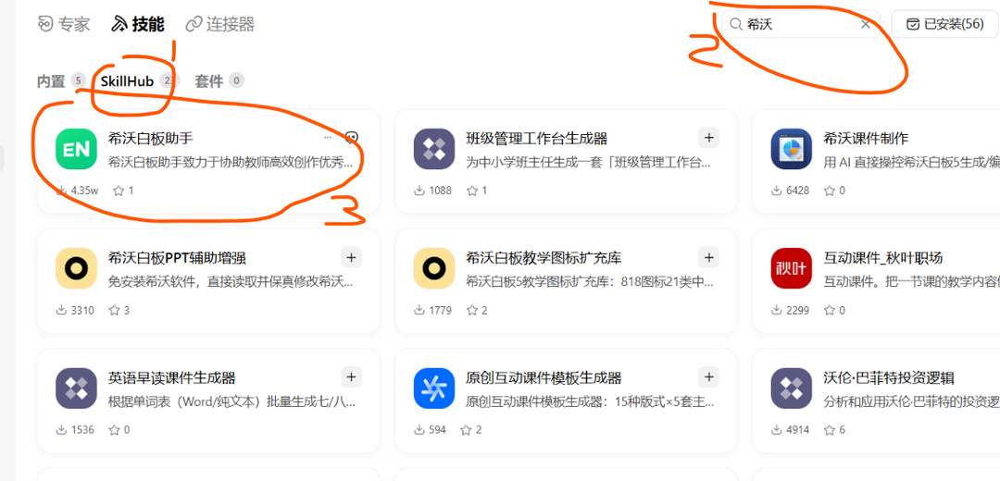
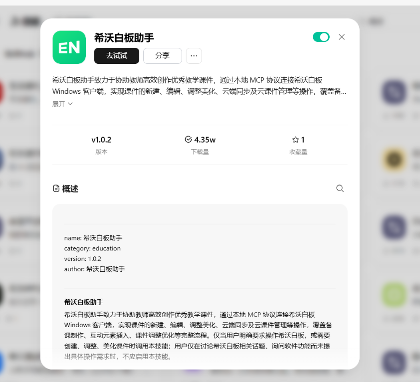
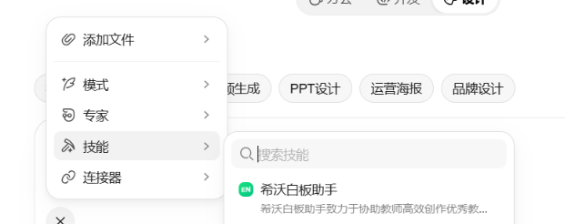
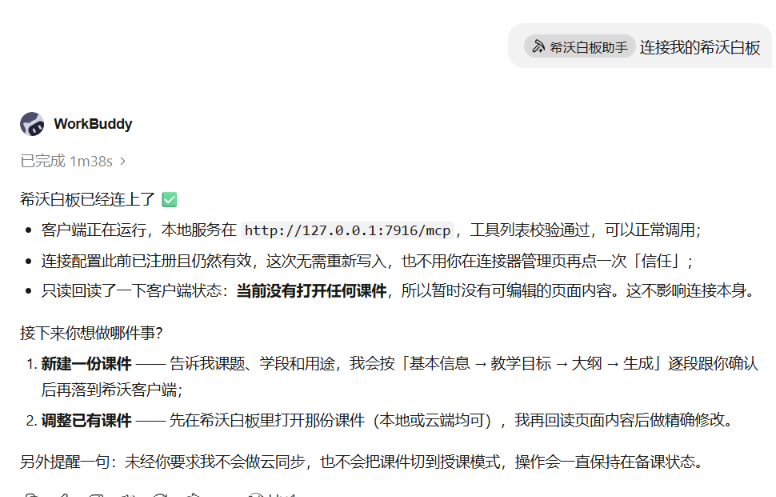
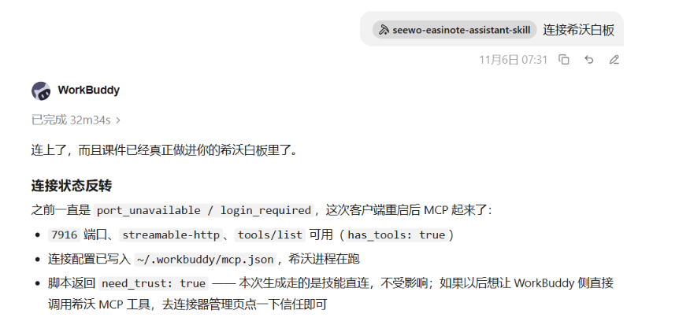
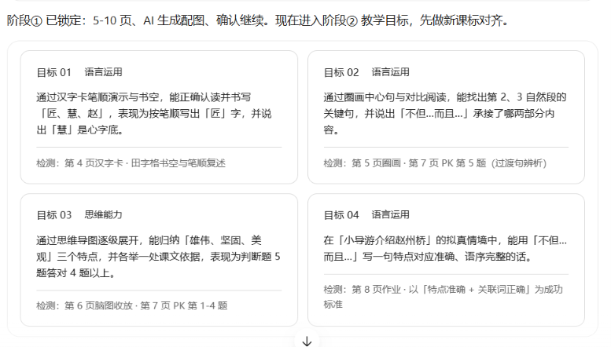
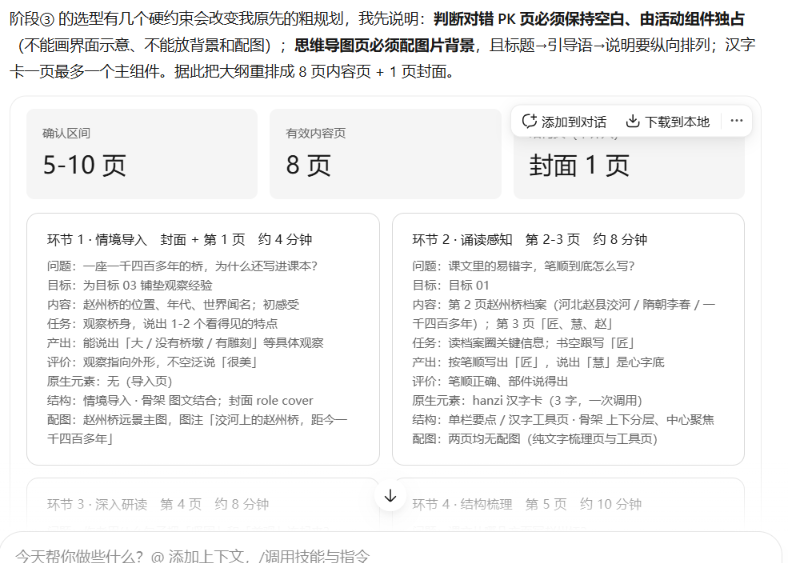
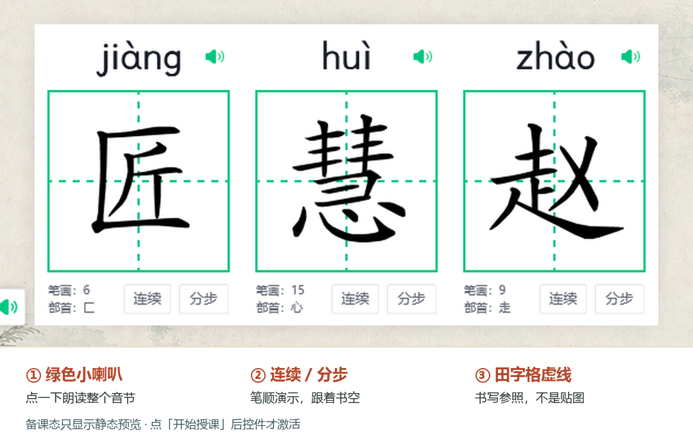
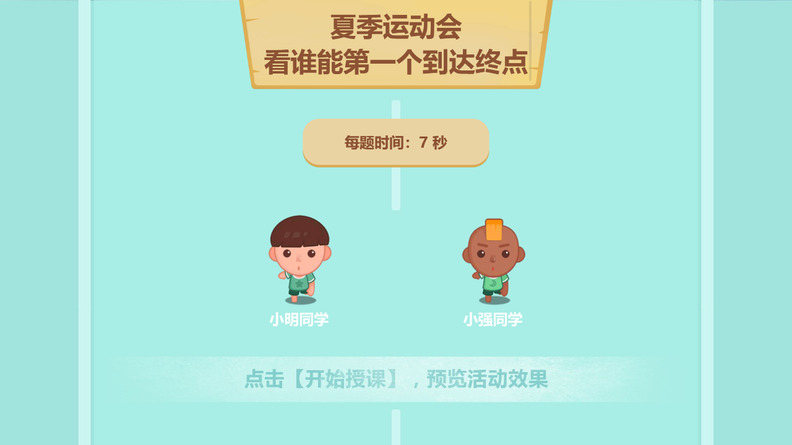

workbuddy 搭配希沃，简单四步，直接在希沃中做出原生课件。有汉字卡，可以读，带笔顺，有思维导图，有交互游戏。这是其他的 AI 生成 PPT 所做不到的，接下来四步带你完成。
实在搞不定就私信我（是点我头像，私信，不是留言），回复「希沃」，获取详细教程。
这篇不讲原理，就四步。照着做，用《赵州桥》走一遍，十分钟左右。
开始之前，电脑上装好希沃白板 5、登录自己的账号，WorkBuddy 打开就行。
先看成品 👇

在左侧「专家 / 技能 / 连接器」里点开技能市场（SkillHub），搜索「希沃」，找到「希沃白板助手」并安装启用。



或者直接在 WorkBuddy 对话框里发这一句，让它自己安装。
seewo-easinote-assistant-skill，安装这个技能先打开希沃白板 5、登录，等主界面出来之后再等 30 秒。然后回 WorkBuddy 说。
@希沃白板助手 连接希沃白板或者在对话框里选择技能，搜索「希沃白板助手」，点它，再在对话框里对话。
看到这三样，才算连上。
"connected": true，端口 7916has_tools: truemcp.json 里 entry 有值

下面这段整段复制过去，换课题就能用。当然，课件你也可以自己设计好发给它，本身这个技能带的有课件设计的功能。
用 seewo-easinote-assistant-skill 生成人教版小学语文三年级下册《赵州桥》第一课时的课件，
5-10 页，图片由 AI 生成；
必须用到希沃特有的汉字卡（匠、慧、赵，带笔顺演示）、
思维导图（总说身份→分写雄伟/坚固/美观→总结文化遗产）、
判断对错课堂活动（5 题）；
交付物是希沃客户端里真实打开的 .enbx 原生课件，不要导出 PPT。它会弹四次确认，按顺序回。
.enbx

有个小窍门，希沃那些特有功能是「点名才有」的。生字是哪几个、判断题考什么、思维导图根节点是什么，都写进提示词里。只说「做个互动课件」，它可能就不给你加。
大概 30 秒，希沃客户端里会自动打开 9 页《赵州桥》。
这时候一定要点「开始授课」再验，汉字卡旁边的小喇叭能读、「分步」能一笔一笔演示、思维导图能逐级点开、判断活动会一道道出题。
备课状态下这些组件只是静态预览，不点「开始授课」，看起来就跟图片一样。


login_required / 端口不通 → 彻底退出希沃重开、登录、等 30 秒，再连一次.enbx 原生课件」一节课值钱的地方，在学生能不能上手点一下。这四步走完，剩下的时间留给教学设计。
看了教程不知道怎么操作的，私信我沟通。
#AI备课 #希沃白板 #WorkBuddy #课件制作 #小学语文 #教师效率